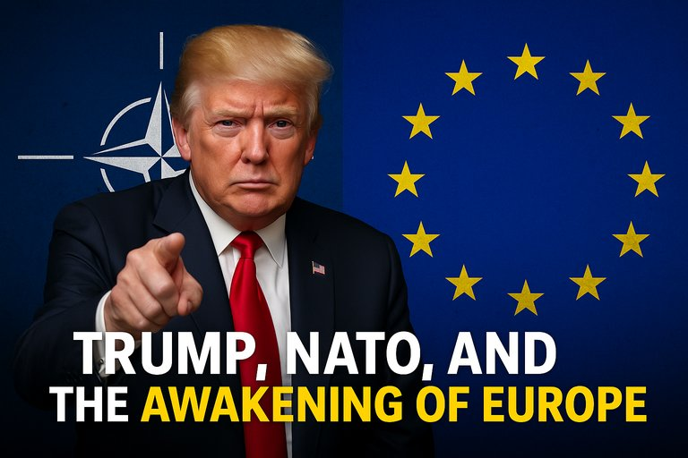

Publicado em 2025-06-25 17:16:12
10 de Junho de 2025
por Augustus Veritas
Nos corredores do poder transatlântico, um nome volta a ecoar como trovão num céu carregado: Donald J. Trump. Com a subtileza de um bulldozer e a precisão de um vendedor em feira, o antigo presidente norte-americano voltou a pressionar os aliados europeus da NATO: ou pagam (e bem), ou ficam entregues à sua sorte. Mas desta vez, foi ainda mais longe: “A Europa tem de gastar muito mais em defesa, e deve gastar a maior parte em armamento americano.”
Mais claro, impossível. Para Trump, a NATO é um negócio. E como em qualquer negócio à moda de Trump, o lucro tem de fluir para a América.
O que Trump nos oferece é uma versão século XXI de um velho truque de gangsters: proteção paga — ou melhor, extorquida. Quem não pagar a quota do clube, não merece a segurança do guarda-chuva nuclear. Esta lógica perversa destrói o espírito fundacional da NATO, que sempre se afirmou como uma aliança de defesa coletiva baseada em valores partilhados, não um bazar de armas.
O que fazer então, Europa?
A postura de Trump, por mais grotesca que pareça, pode funcionar como o abanão de que a Europa precisa para finalmente acordar. A dependência crónica dos EUA não é apenas um erro estratégico — é um suicídio político.
A Europa precisa de deixar de ser um “protetorado militar” e afirmar-se como poder autónomo, soberano, inovador e defensivamente preparado. Porque a paz não se garante com submissão — garante-se com dignidade, lucidez e força estratégica partilhada.
"Trump não quer aliados, quer clientes. E a NATO, de aliança defensiva, transforma-se num balcão de armas made in USA. A Europa ou acorda… ou afunda-se no seu próprio sono estratégico."